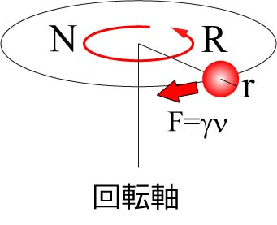
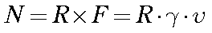
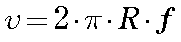
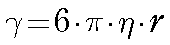
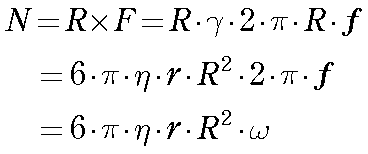
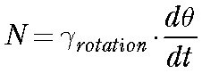
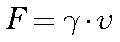
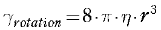
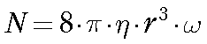
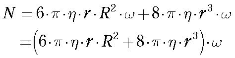

さて，運動方程式の項で，慣性力，粘性力，弾性力をまとめて運動方程式を記述しましたが，つまりこの三つは同じ働きをするものとも考えていいのです．
つまり，上の設定では，慣性力だったのを，弾性力，粘性力，で置き換えてもいいのです．
では，粘性力で置き換えてみましょう．
先ほどは，Rだけ離れたところにおもりをつけましたが，今回は，おもりではなく，球体をつけて周囲の粘性抵抗を受けるようにしましょう．

すると，式は以下になります．

ここで，半径Rを周回する物体の速度はどう計算すればよいでしょう？
半径Rの円周は，２πR．
そこを１秒間にｆ周回るとすると，

さらに，半径ｒの球体の場合の粘性抵抗係数は，

となるので，

となります．
ここで，ωは角速度です．
ここでもう一つ重要なファクターが．
それは物体の自転運動．
今までは，回転中心を周回する物体の，いわば，公転運動を見ていたのですが，もう一つ，回転中心を１周する間に自転運動もするのです．
このように，中心から離れて固定されながら回転する物体は１周する間に，自分も一周します．
この自転において，物体を自転させるのに必要なトルクは，

となります．
これは並進運動の，

と対応します．
球体の場合の，回転の粘性抵抗係数は，

となり，回転の時間微分は角速度となるので，

となります．
二つをあわせて，

となります．
このように，
回転する球体の半径，ｒ
回転の大きさ，R
角速度，ω
溶液の粘度，η
から，回転体の発生するトルクを見積もることができます．